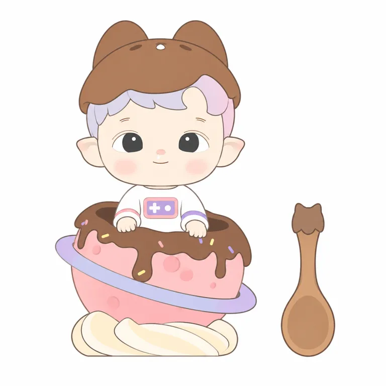

01
童心，从一个小动作开始
官方设定、作者解释与研究归纳分开。
STANDARD STUDY / 2026.10.20
把童心，
带在身边。
一点鼻涕，一点想象。
从安静的小男孩，到可以随身携带的陪伴。

让“保持童心”有一个具体的脸，
再让它进入日常的小动作。
官方设定、作者解释与研究归纳分开。
日期不同，是因为记录的事件不同。
Agee & Yep共同创作：Yep负责概念和草图，Agee负责细节与新增元素。公司2022年报称其为新签约IP；不能套用前一个IP的PDC内部原创口径。[A02] [A05]
| 时间 | 事件与证据边界 | 性质 |
|---|---|---|
| 2020 | 品牌2022年供稿自报角色诞生；尚无当年草图记录。[A04] | self_report |
| 2022-07-28 | 《幼稚园成长日记》首系列线上上架。[A04] | self_report |
| 2022-07-29 | 首系列线下开售；与线上时间分开。[A04] | self_report |
| 2022年度 | 公司年报称当年新签约IP，没有披露精确合同日。[A05] | fact |
| 2024-02-08 | The Sweetheart Figure官网发售日，本轮平面锁定款。[S01] | fact |
| 2025-02-17 | GQ发表两位创作者访谈，解释分工及五官设计。[A02] | self_report |
| 2025-06-20 | Gummy Bear香味搪胶毛绒挂件发售。[A08] | fact |
| 2025-09 / 11 | 加拿大官网分别列STITCH 1/8、Little Foodie 1/12可动人偶上市。[A10] [A12] | fact |
| 2026-09-10 | 作者访谈谈及未来探索成长、孤独、勇气等题材；不是已上映故事。[A03] | self_report |
首发文章明确为品牌广告供稿。“多店售罄”无库存和门店分母，不变成独立全国销量证据。[A04]
实物图、头部挂件与全身挂件分别看；没有把生成图当原始证据。


原图归原权利人；网页引用原站地址，未随档案再分发。早期两张配图访问403，未进入已看样本。缺侧背面与原始二维标准图。
原型、轮廓、记忆点、面部、反常五条轴。
| 轴 | 已看样本中的关系 | 适用边界 |
|---|---|---|
| 原型／轮廓 | 幼童类人，大头小身；小脸嵌入主题外壳 | V06/V07只有头部，不推算完整头身比 |
| 记忆点 | 双眼皮、小鼻涕、短精灵耳及刘海面部关系 | 毛绒装遮耳；400px小图无法确认所有鼻涕细节 |
| 脸 | 浅脸深眼、小鼻小嘴、红晕；V01微笑 | V02/V03眼色会变，V07闭眼，不能锁成永远黑色睁眼 |
| 表达 | 克制的童真、安静与好奇，可供观者投射 | 不是所有款都悲伤，也不是全体买家的心理画像 |
| 反常 | 精灵耳与幼童融合，小鼻涕保留不完美 | 熊耳帽、羊角、翅膀、星球均为主题变量 |
V01目视估计色板；无官方色号、无伪精确面积。
棕帽与巧克力形成上、下呼应；粉色容器占据下部，淡紫环和头发连接两部分，奶白衣服与底座分隔主色。Gummy Bear则把毛色、头发、眼色、脚掌与挂环一起按口味改色。
以上为画面关系观察。渲染光照、实物和屏幕会改变颜色；不直接用于注塑、涂装或面料下单。
规格采用官方文字，价格仅为访问当天加拿大目录。
| 产品 | 规格／时间 | 价格口径 |
|---|---|---|
| 幼稚园成长日记 | 2022年7月首系列；尺寸材料仅见澳门页摘要，暂不确认为已读规格。[A04] | 未核 |
| The Sweetheart | 2024-02-08；PVC/ABS，高3.94英寸。[S01] | 未使用该页主商品价 |
| Constellation星座 | 7×6×7cm；外壳50%聚酯、50%PVC，填充聚酯；页面只写10月11日。[A09] | C$26.99 |
| Gummy Bear | 2025-06-20；不含挂环13cm；PVC/聚酯/TPE，含EVA香珠。[A08] [A09] | C$36.99 |
| Little Foodie 1/12 | 2025-11-27加拿大官网线上；素体13cm，PVC/ABS/尼龙/聚酯。[A10] | C$79.99 |
| STITCH 1/8联名 | 2025-09-25加拿大官网线上；素体约20cm，多种塑料、织物和五金。[A12] | C$109.99 |
把收入、利润、单品销量和增长归因分开。
2025全年 · IP收入
8.48 亿元同比约278.09%
按公告原数计算
2026上半年
未单列不等于零收入
不推断被淘汰
2025全年公告印刷页33；2026半年公告印刷页30。这里是集团按IP归集收入，不是利润、版税、GMV或作者收入。2026全年数据未知。产品、渠道、供货和市场扩张都可能影响结果，不能把增长只归给一个鼻涕或一种情绪。
原帖与评论是个案，不是消费者总体调查。
一篇收藏者原帖把香味、表情、颜色分开评价；评论有人提到挂在包上。美感和使用体验可以是两套评价。
有人喜欢菠萝味，有人嫌樱桃味像药；也有人认为过强或几乎闻不到。是主观感受，未做安全或批次检测。
一位用户喜欢指定颜色，却不愿再买盲盒。喜欢角色不必然转化为接受随机款式；不能由个例推算流失率。
上述均来自同一讨论串，不能当三个独立样本源。[A11]
公共元素、独特组合和产品执行分别讨论。
| 机制推断 | 可回查依据 | 替代解释／边界 |
|---|---|---|
| 幼童的亲近感加一点不完美，让“保持童心”变得具体。 | V01的双眼皮、短精灵耳与细小鼻涕；作者解释鼻涕与童年、耳朵与想象力。[A02] [S01] | 不是每款都露耳或睁眼；视觉亲近感不等于已证明的购买因果。 |
| 把脸保留在主题外壳中，用服装与配色延长系列。 | V01甜点星球、V02/V03水果熊服、V06/V07星座头部挂件，主题和载体变化明显。[S01] [A08] [A09] | 颜色、眼色、开闭眼和耳是否露出均会改变，不能用一个SKU定义母版。 |
| 从观看到携带、触摸和闻香，让陪伴发生在日常。 | 官网香珠材料、挂环和毛绒载体；用户称挂在包上，并分别评价香味与颜色。[A08] [A11] | 香味也会产生反感；未证明它是收入增长的主因，不能将用户主观气味反馈当安全检测。 |
童颜与微小不完美建立亲近感，精灵耳加入想象；具体比例组合有辨识性。
安静、童真、对玩具和动物的亲近，不只是一种悲伤情绪。
软乎乎的外壳与幼童脸可能吸引路人，仍属待验证机制。
收藏者可比较款式表情、口味、隐藏款和不同载体；本轮只有局部讨论证据。
大头、大眼、腮红、熊服、低饱和色属于常见元素；差异要看组合、设定、持续主题和产品体验，不凭共性断言抄袭。
两轮纯文字未通过；两轮附图校准。目标始终是V01 Sweetheart。
以下为依据可见作品的研究重建，不是创作者原始提示词，也不证明原作品由AI制作。只有中文已测；英文、原创黑白和实物概念未执行。
必须同时附上V01官方原始参考图。单独复制文字不具备本轮验证结论。
以附图为唯一形状依据，把图中整个玩具与旁边勺子忠实转成正面二维平面插画。保留原图视角、位置、轮廓、头身与面部比例、服装、糖果星球及底座，不重新设计角色。白底、细而干净的棕灰轮廓线，平涂色块；用极少量浅色块概括必要层次，不要照片、3D塑料反光、体积渲染或渐变。最优先保持脸的身份：短宽的幼童圆脸，额头留白较大；两条极短细眉，明确细双眼皮弧线；眼睛比常见动漫大眼小，横向眼白、竖向深灰圆角方瞳、小白亮点，眼距和原图一致；小红鼻、鼻下细小白鼻涕、极短浅笑嘴，柔和粉腮。两耳为原图的短扇形精灵耳，上端略尖下端圆，不能拉长。灰白紫刘海只覆盖额头上部，画面右边有浅粉紫一片，发束按原图分区，没有耳下长发。棕色帽子有原图的两只偏窄圆钝尖耳与不规则波浪帽沿，微小面部标记按图保留。白上衣胸口粉框紫底，左白十字右白圆点；粉色与紫色袖条，手掌搭在巧克力容器边沿。粉色半球、巧克力滴落、细小糖针、斜向浅紫行星环、奶油旋纹底座均按原图。右侧独立勺子照图：细柄、下方椭圆勺头、柄顶是原图三瓣小轮廓而不是另画有脸的圆熊头。保留画面留白，不加字、不加品牌和水印。不要过大黑眼、粗睫毛、尖长耳、长发、额外腮红划线、额外按钮，也不补画被容器遮住的腿。 本轮进一步校准：严格按原图眼睛的外轮廓，眼白下缘近水平，瞳孔是偏竖向、底部稍平的深炭灰圆角形，不画成正圆；瞳孔在眼白中的位置照原图，保留很窄的浅灰侧边和一个小白点。双眼皮为上眼缘外另加的细弧，两道线之间距离很小；眉毛不要加粗。脸颊两边往下自然收拢，短圆下巴，不变成正方脸；小嘴更短、笑弧更浅。表情不要比参考更活泼。使用均匀单色区域，腮红以极浅粉平面区表示，不用渐变，巧克力与棕帽也没有光斑和渐变；二维线稿加平涂。除这些修正，仍忠实保留原始参考的全部比例、配色分区、姿态与物件位置。下载原词
无伪造相似度分数。ready仅是这一参考辅助平面的研究状态，不替代用户选择、商业使用许可或工艺验收。
本轮停在研究与平面校准；不自动启动原创或实物。
借鉴把“保持童心”落到具体日常动作；新表达从独立处境出发，不照搬角色故事。
可以研究轻微不完美如何丰富亲近感；新角色另定原型、比例、面部与记忆点，避开识别组合。
把陈列、携带、触感、气味分别验证，香味应保留无香选项的测试假设；本轮仅指定SKU参考辅助平面，不发布实物延展。
13组来源；发布日、商品发售日和观察日分开记录。
POP MART Malaysia · 发布：未知
没有中文实名、出生日期或国籍信息；不能将内向自动等同临床社交焦虑。角色故事是官方设定，不是购买者诊断。
GQ Thailand／เฉลิมพล ตั้งศิริสกุล · 发布：2025-02-17
日期由泰国佛历2568年换算2025。这里只记录作者对设计的解释，本代理未目检图片；不能把情绪安慰的愿望当医学功效，也不能把未来反派设想当已上线角色。
BusinessToday／Carrine Yem · 发布：2026-09-10
没有给出可核创作年月。粉丝反馈由作者转述，非独立用户调查；睡眠与情绪感受不证明治疗效果。勿写成当前已经存在完整长篇剧情。
泡泡玛特供稿／i黑马广告栏目 · 发布：2022-07-29
页面明确标广告、素材由广告主提供。可以区分2020创作与2022商品首发，但创作年仍为品牌自报；“记者走访”“售罄”不应包装成独立实地调查或全国售罄率，未提供库存分母。
POP MART／HKEXnews · 发布：2023-04-21
确认当年公司新签约披露；没有具体签约日、交易金额、著作权转让合同或HACIPUPU单项权利范围。不能沿用HIRONO的自有IP分类，不能把Artist IP自动翻译成完全持有版权。
POP MART／HKEXnews · 发布：2026-03-25
全年业绩公告，不是IP利润、授权费、GMV或作者收入；Artist IP是财报分类，不能单独证明合同法律权属。
POP MART／HKEXnews · 发布：2026-08-20
2026H1 HACIPUPU收入应留null／未单列，不能把其他艺术家IP合计或Zsiga一行错归它；未单列不等于零收入或已被淘汰。
POP MART US · 发布：未知
不得将模板式12盒文字直接当可靠端盒数；需看包装/SKU细则。香珠不代表可食用或抗敏承诺。该页未取得独立主商品价，其他加拿大官方目录显示C$36.99。已目检Peach和Green Apple两款图，未看完整款式集。
POP MART Canada · 发布：未知
只记页面明确日期，不补猜发售年份。价格为加拿大动态目录价，不是中国首发价；网页SEO标题写US但路径/币种为加拿大。
POP MART Canada · 发布：未知
搜索旧摘要显示C$96.99，但本次打开正文为C$79.99，使用后者并注明访问日。不把1/12比例等同尺寸，不宣称关节数或可换眼等未读到功能。
Reddit r/PopMartCollectors／用户原帖与评论 · 发布：未知
正文可读，日期只显示约1年前；页脚July 3 2025并非明确帖头时间，故日期null。个别自述无质量检测、真伪检验或总体抽样，不能算满意率或普遍质量问题。图片未目检。
POP MART Canada · 发布：未知
证明具体Stitch联名商品存在，不证明IP收购或合作销量；时间为该官网地区发布时点，PST照录不擅自换时区。价格不是中国价。
POP MART US · 发布：未知
页面列2024-02-08发售、PVC/ABS、高3.94英寸。本轮只观察商品主图，非全角度母版。